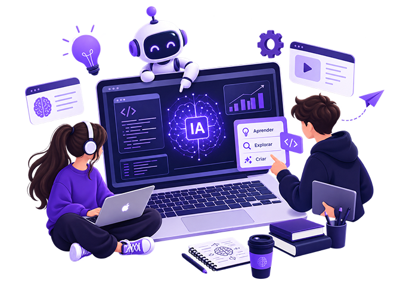
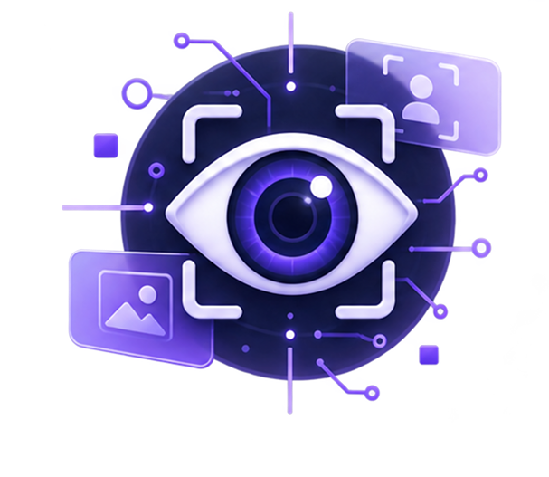
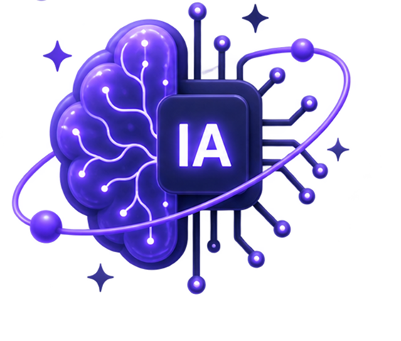

Entenda inteligência artificial de forma simples e prática.
Explore o universo da IA
Em nosso site, buscamos abranger um tema muito debatido nos dias atuais e que é de suma importância para a atualidade e futuro. Parte integrante das disciplinas do curso técnico (TI), escolhemos o tema sobre inteligência artificial. Com esse projeto, temos o objetivo de informar sobre um assunto de extrema importância, além de debater sobre tal tema e discutir sobre seu impacto na sociedade que estamos incluídos.

A visão computacional é uma tecnologia em constante evolução que tem sido amplamente utilizada em diversos setores da sociedade, incluindo indústria, saúde, agricultura e muito mais. Ela permite que as máquinas “vejam” e interpretem informações visuais, fornecendo insights precisos e eficientes para melhorar a tomada de decisão.

Cada vez mais a inteligência artificial vem se tornando algo necessário no nosso dia a dia. Embora o primeiro esboço de uma IA exista desde 1950, o desenvolvimento tecnológico recente fez com essa tecnologia que só parecia possível na ficção, se tornasse algo comum e de fácil acesso para todos. Mas assim como na ficção, nos tornamos dependentes rapidamente das inteligências artificiais.